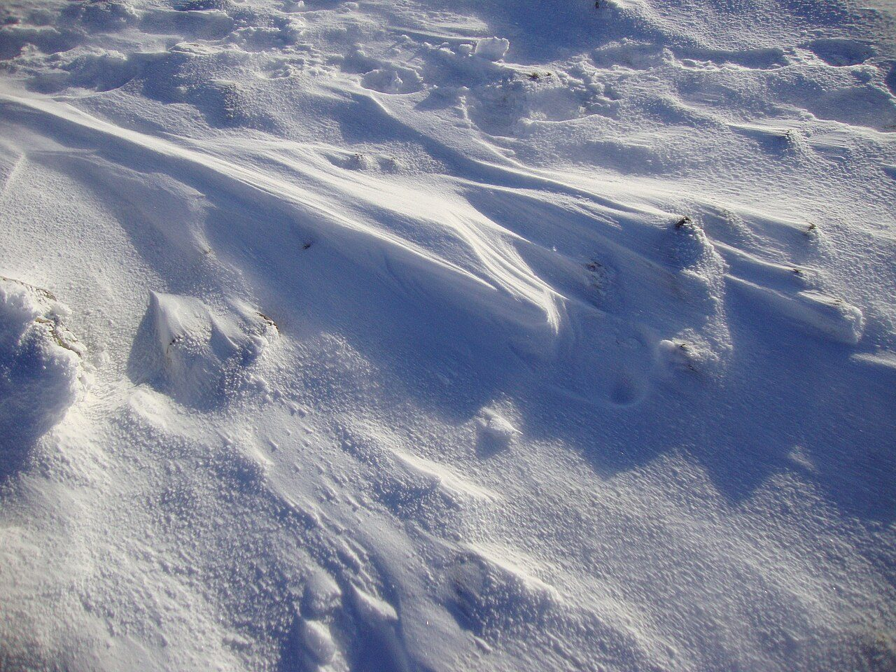
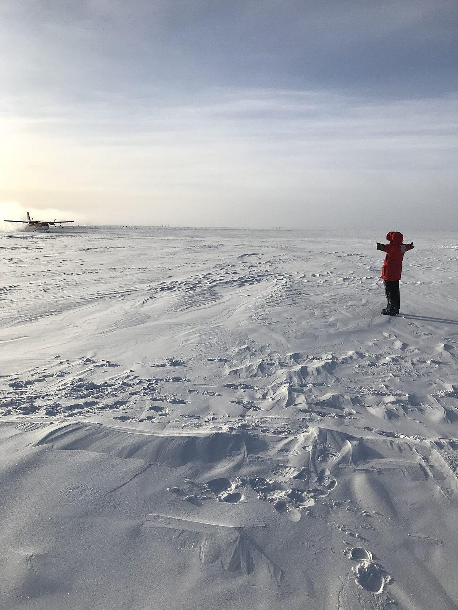
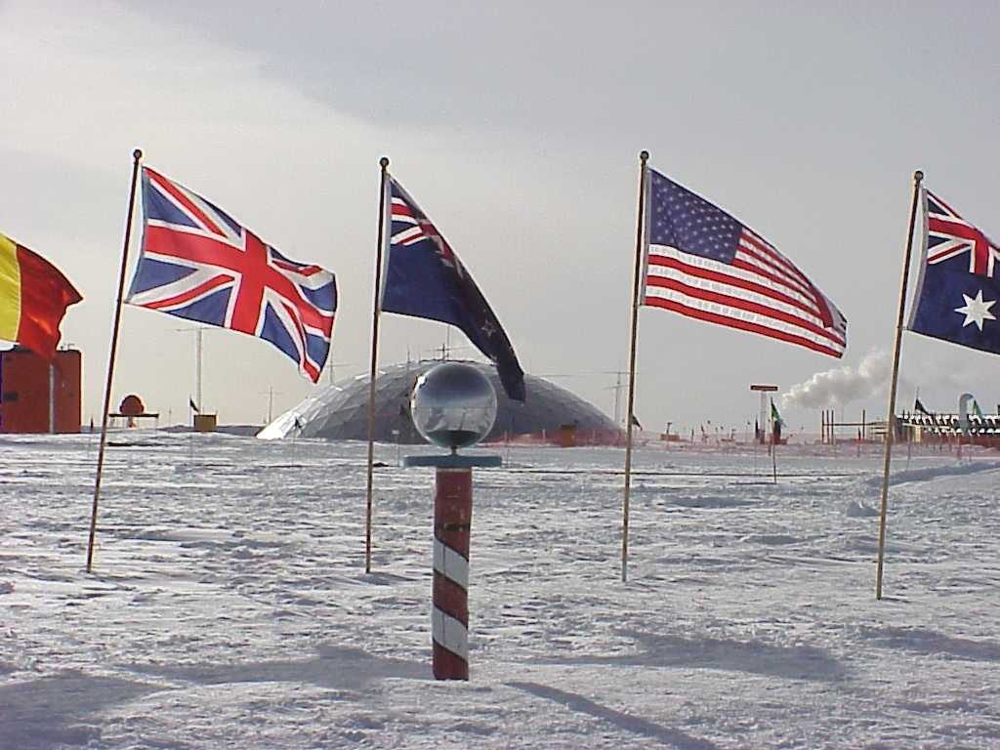
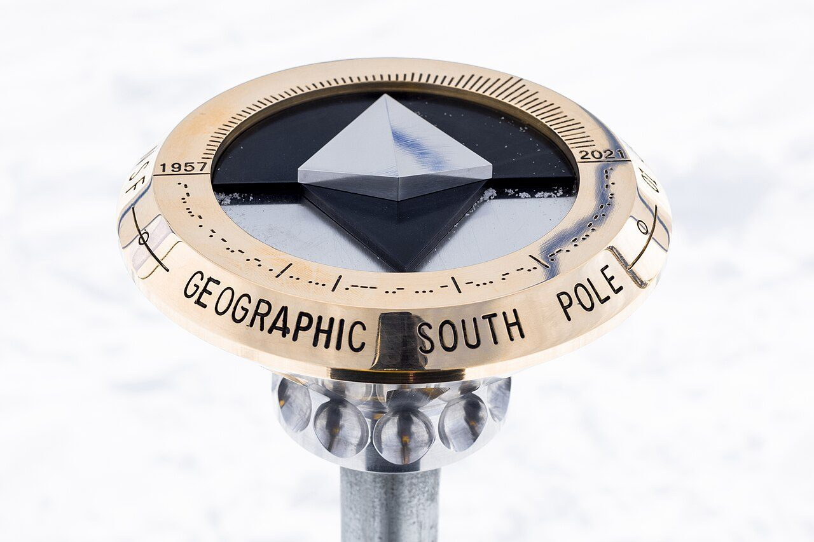

Last Degree to the South Pole
Ski the final degree of latitude to 90° south.
There are 111 km between the two ends of Last Degree to the South Pole, and Geographic South Pole is the far one. You begin at 89°S Start Camp. Watch Walks moves you along it with the steps you already take, so it's about 4 weeks at 5,000 steps a day. Here are its 12 landmarks, in the order the route meets them.
- 111km end to end
- 12landmarks
- 4 weeksat 5,000 steps a day
- Geographic South Polefinishes at

The landmarks of Last Degree to the South Pole
12 landmarks, in walking order. Each photograph is by the person credited beneath it, used as they licensed it.
-
89°S Start Camp
-
First Plateau Camp
-

Photo: L Cowieson · Wikimedia Commons, CC BY-SA 2.0 The Sastrugi Fields
-
89°20′S
-
Whiteout Camp
-
89°30′S
-

Photo: Cherisa Friedlander · Wikimedia Commons, Public domain The Featureless Horizon
-
89°40′S
-
Last Camp
-
The Last Ten Kilometres
-

Photo: NSF/Josh Landis, employee 1999-2001 · Wikipedia, Public domain Ceremonial South Pole
-

Photo: Andrea Dixon · Wikimedia Commons, Public domain Geographic South Pole
Walking Last Degree to the South Pole
Your watch is already counting these steps. Watch Walks spends them on Last Degree to the South Pole, all 111 km of it, and hands you each landmark as you reach it. There's no route recording, no account and no ads. The Inca Trail is free; this one is a one-time purchase with no subscription.